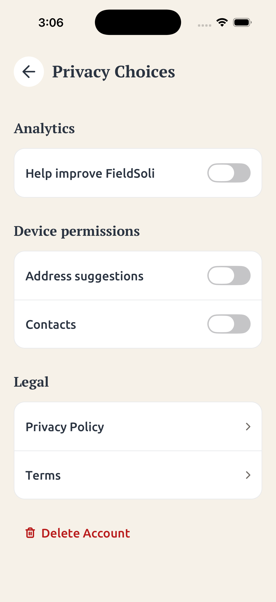

Approved but not shipped · October 24, 2026
Nearby address suggestions
All Address fields use optional approximate device location, the saved business address, or ordinary suggestions. Native foreground permission is requested on first Address focus. Privacy Choices groups Address suggestions and Contacts under Device permissions, using the same native switch style as Analytics. The first explicit device switch tap shows the native permission prompt; later taps open FieldSoli’s app settings, where iOS may resume the last permission subpage. Separate switches are retained by the approved product decision. Device switches reflect OS access, including limited Contacts access, and refresh after requests or returning from Settings.

- Device coordinates are rounded to two decimal places before leaving the device.
- Denied or unavailable device location falls back to the previously saved business address.
- Manual entry remains available. Suggestions favor nearby matches without restricting distant matches.